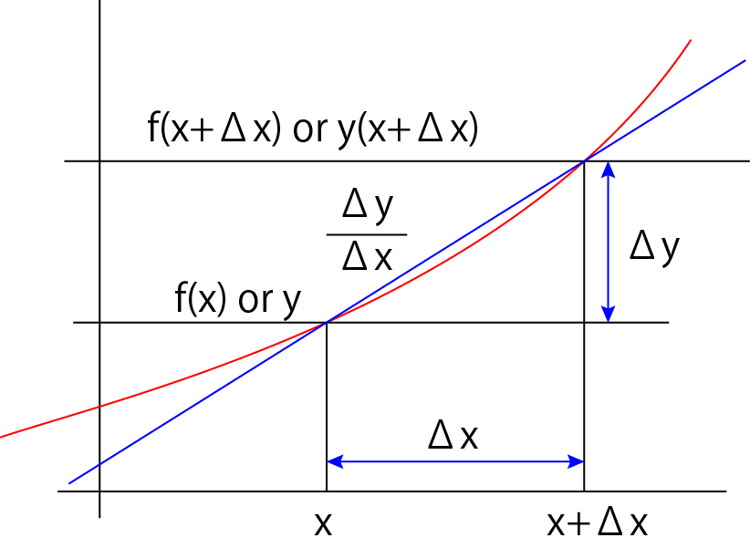

微分について
微分については，簡単に説明します．
微分とはある地点における変化量を示したものであり，関数ｆ（ｘ）の微分は，
\( \Large \displaystyle \frac{d \ f(x)}{dx} = \displaystyle \lim_{ \Delta x \to 0 } \frac{f( x + \Delta x) - f(x) }{ \Delta x} \)
と表すことができます．

この図において，Δｘ，をどんどん小さくしていった時の傾きとなります．
では，微分しても元の形と同じ関数はどのような形でしょう？
それが，
\( \Large \displaystyle f(x) = e^x \)
です．
それでは，この，e，はどんな値となるでしょうか？